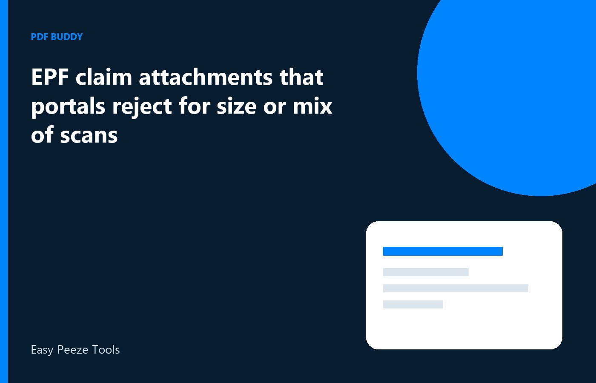

An EPF claim often fails at the attachment step, after the form itself is filled. The portal has slots for specific papers, and it rejects a file that is too heavy or a jumble of JPG pages and a PDF stuck together. Members then retry the same bundle and lose a day. On Windows, split the job into one PDF per slot, check the size the claim screen shows, and upload that file only. This is about the attachment the claim form asked for, using documents you already hold. If a page is missing from the passbook download, fetch it again from the EPFO or bank channel you use. Do not invent a page.
Why mixed scans get rejected
A claim slot expects one document of one type. A cancelled cheque photo, a passbook PDF, and a photo of a Form 15G sitting in one file do not meet three slots. They meet none of them cleanly. The portal may also refuse a file that is still an image with a PDF extension, or a PDF that contains only a tiny embedded picture. Export a real PDF per slot. Open it and turn every page. If you see a photo of a screen, go back to the download. Screen photos lose the member name and the UAN line that the reviewer needs.
Order inside a single allowed file still matters. If one slot permits several pages of the same statement, keep those pages in date order and drop blank backs. Do not add a cover note as page one unless the claim instruction asked for a letter. Extra pages change the page count and can push the file over the size cap. Build the smallest complete file, then stop. You can always upload a corrected replacement. You cannot easily explain a bundle that mixed your papers with a colleague's by mistake.
- One slot, one document type
- Pages in date order inside that file
- No JPG renamed to PDF
- No second person's papers in your claim
Size after export, on that slot
Write down the maximum size printed beside the upload button. It can differ from other government portals you used last year. Export the PDF, then read the file size in Windows, and compress only if you are over the cap. After compression, open the file and read the account number and the dates. If those digits break into blocks, the file is too small to be useful. Raise the quality and try once more, or remove blank pages and export again before you compress harder.
Colour photos of stamps are the usual reason a short claim file is huge. If the form accepts a greyscale copy of a text-heavy page, use that for the text pages and keep colour only where a seal must be seen. Do this in the desktop tool on your PC. Uploading the raw camera roll to a random compressor exposes the same identifiers you are about to send to EPFO. Finish locally, then upload on the official claim page only.
Locked downloads and bank files
Passbook PDFs and bank proofs sometimes open only with a password. Use the password you already have from the bank or from the member portal. Then save the pages the claim slot needs. If you do not know the password, use the reset or resend option on that official site, or visit the branch channel you trust. Preparing a claim does not include breaking a lock. A file you cannot open is a file you should not upload, because you cannot check the name on it.
After it opens, confirm the name and the account match the claim. A statement for a closed account or for a joint holder who is not the member will be rejected later, after you waited. Split away the extra pages if the download included more months than the slot wants. Keep the full download at home. Send the extract. Name it with the claim purpose and the month so a second attempt does not pick the wrong version from Downloads.
Retry with a new file name
If the portal rejects the upload, do not click the same file again and hope. Read the error. Size, format, and a damaged page are different problems. Fix that problem, save a new name such as EPF-Cheque-v2.pdf, and upload the new file. Some screens keep the previous failed file in the session. A new name makes it obvious which version went up. Clear the slot before you attach the replacement if the form lets you.
When the claim is submitted, save the acknowledgement and a copy of each attachment in one folder on the PC. Grievances and re-submissions ask for what you sent. A chat thread will not preserve that. Store the PDFs. You are attaching papers for your own claim. If the employer must sign a page, get that signature through the proper channel. Do not paste a signature image you copied from an old form.
Questions people actually ask
The portal says the file is too large, but it is only four pages. What should I check? Check the size beside that slot, then look for a colour photo filling each page. Export a cleaner PDF, drop blank sides, and compress once. Read the account number afterward. A tiny file that blurs the digits will fail the next check even if the upload bar turns green.
Can I upload a ZIP of photos? Use the format the claim slot names, which is usually a PDF. Turn the pages into one PDF for that slot on your PC. A ZIP or a row of images is a different product, and mixed types are a common reject reason.
I forgot the PDF password on the bank proof. Can the editor remove it? No. Use the password the bank already gave you, or download a fresh proof from net banking. If you cannot get it, ask the bank through the official reset. Do not try to remove a password you do not know. Upload only a file you were able to open and read.
Fix the claim attachment on the PC, then upload it on the official EPF page. Pdf Buddy, by Easy Peeze Tools, is a Windows desktop PDF editor that works on the PC. Files are not uploaded to a random website. The free tier is 2 files a day. Pricing starts at ₹149. Details are on pricing.